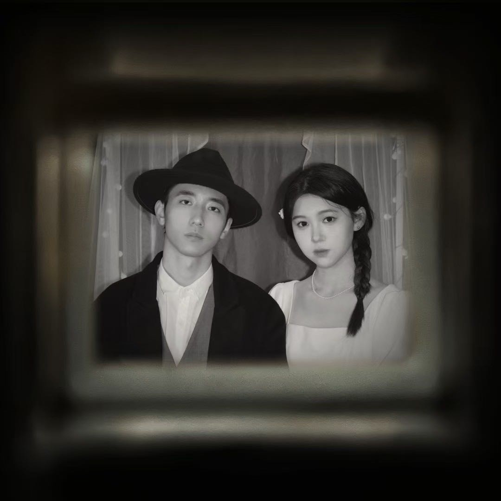
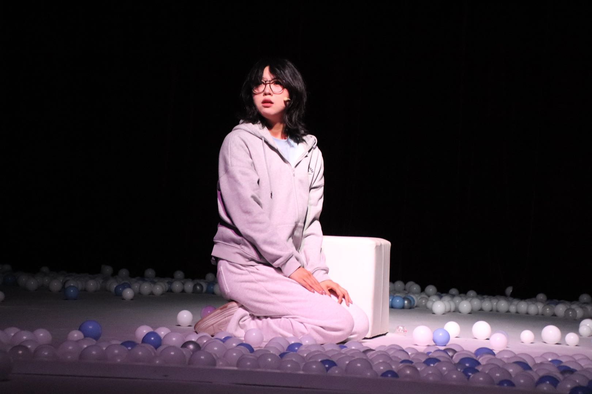
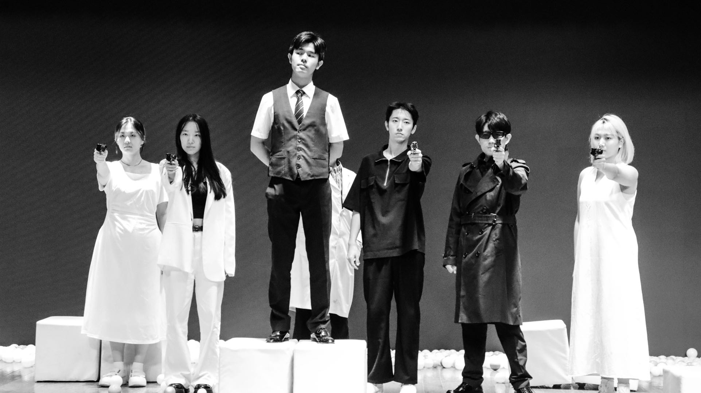

头版现场北林学生话剧团
爱上一个人，封锁一座城
《倾城封锁》在城市被按下暂停键之后，重新打开了人与人之间的距离。

白流苏与另一个人并肩站在帷幕之前：关系因此出现，也因此开始被城市审视。
城
当一座城市被封锁，爱是否还能够抵达另一个人？《倾城封锁》以跨年大戏的形式，把熟悉的情感放进一座被暂停的城市，让舞台成为一节驶向未知的列车。
剧中人物在有限的空间里相遇、错身，又在一次次靠近中暴露自己的选择。灯光切开黑暗，白色帷幕像一层薄薄的边界：它隔开角色，也让观众看见边界另一侧的心事。
“爱上一个人、封锁一座城。”
本报剧场档案组 整理于演出资料与现场照片
毕业大戏专栏AI × 人类 关系实验
《解：》发来一封来自未来的来信
它无所不知、 有问必答；而在算法的深处，未被设定的程序正悄然滋长。
这是一个信息涌动的时代。智能的浪潮轻抚着认知的边界，理性的运算尝试领会情感的温存。北林学生话剧团的 2025 毕业大戏《解：》，把问题交给舞台，也把舞台交给问题。
作品承接《最优解》的内核，融合当下热点话题，引入全新的表现形式，在虚拟与现实的罅隙边缘，探寻没有答案的答案。音乐剧与话剧交错，爆笑片段与温情瞬间并置，舞台因此成为一台不断重新启动的机器。
性格测试当人格标签与 AI 测试完全一致，究竟是谁在做局？

性格测试：当答案看起来比自己更像自己。loveseek软件分配恋爱对象，匹配成功之后，爱会被计算出来吗？

【剧照】loveseek
出演单元：性格测试、loveseek